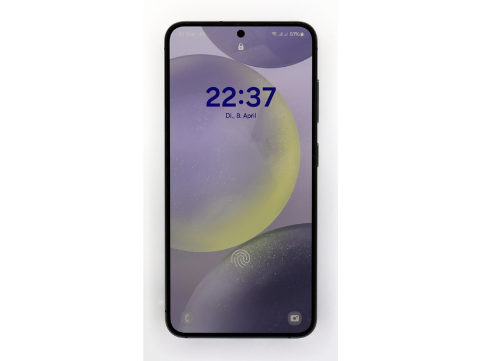

Samsung Galaxy S24

Опис
Samsung Galaxy S24 – найкомпактніший смартфон лінійки: з екраном 6,2 дюйма його зручно тримати однією рукою, а за можливостями він майже не поступається старшим моделям.
Екран AMOLED з частотою оновлення до 120 Гц робить прокрутку плавною. Основну камеру на 50 Мп доповнюють ширококутна камера і телекамера з триразовим оптичним наближенням.
Samsung обіцяє для цієї моделі сім років оновлень Android і безпеки, тому смартфон залишиться актуальним довше за більшість конкурентів.
Характеристики
- Тип
- Телефон
- Ціна
- 30 000 ₴
- Рік випуску
- Параметри
- Екран 6,2" AMOLED 120 Гц
- Процесор Exynos 2400
- Камера 50 Мп
- Пам'ять 8/256 ГБ
- Наявність
- Є в наявності
Модифікації
| Модифікація | Екран | Акумулятор | Ціна |
|---|---|---|---|
| Galaxy S24 | 6,2" AMOLED | 4000 мА·год | 30 000 ₴ |
| Galaxy S24+ | 6,7" AMOLED | 4900 мА·год | 38 000 ₴ |
| Galaxy S24 Ultra | 6,8" AMOLED | 5000 мА·год | 50 000 ₴ |